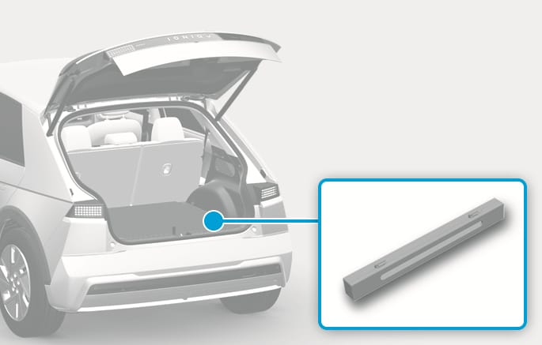
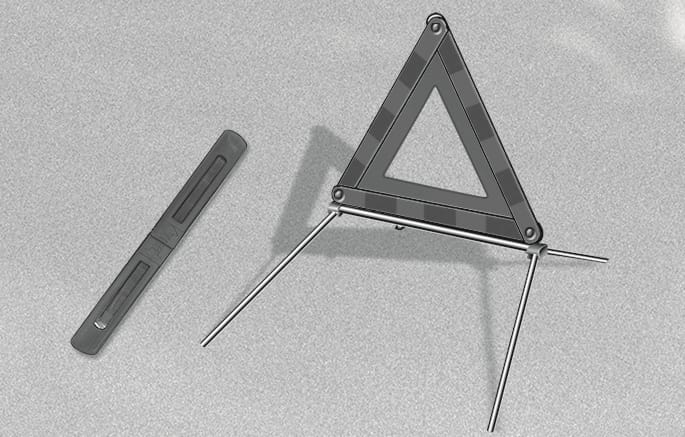

고장 자동차 표지판(안전삼각대)

2C_WarningTriangle
도로교통법에 따라, 차량 고장 등의 사유로 고속도로 등에서 차량을 주행할 수 없을 때 고장 자동차 표지판을 설치해야 합니다.
-
고장 자동차 표지판은 차량 출고 시 취급설명서와 함께 지급됩니다.
-
고장 자동차 표지판을 차량 내 사용하기 쉬운 장소에 항상 보관하십시오.
-
고장 자동차 표지판을 케이스에서 꺼내십시오.
-
양쪽 날개를 교차해 삼각형을 만들고 교차한 부분을 연결 홈에 고정하십시오.
-
아래쪽에 있는 네 개의 다리를 펼치십시오.
-
접근하는 차량의 운전자가 고장 차량을 확인할 수 있는 위치에 넘어지지 않도록 설치하십시오.

2C_HowToInstallTripod
통행하는 차량에 주의하며 안전한 방법으로 고장 자동차 표지판(안전삼각대)을 설치하십시오.